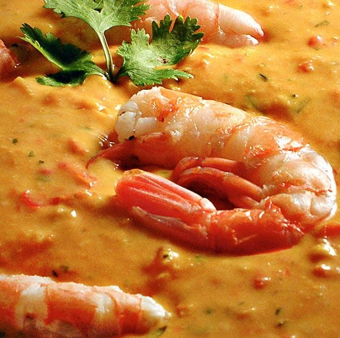
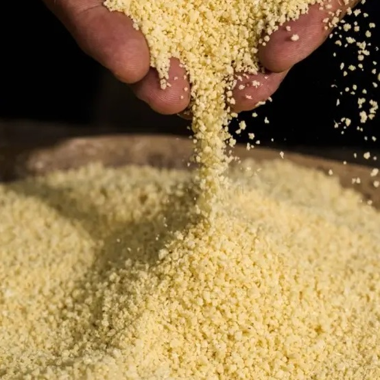
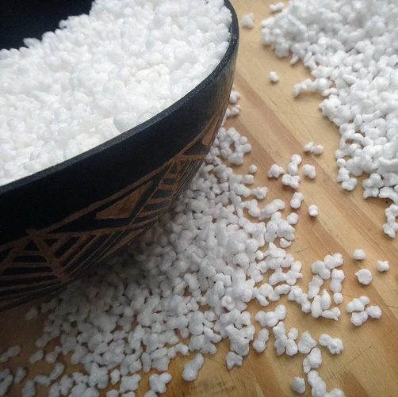
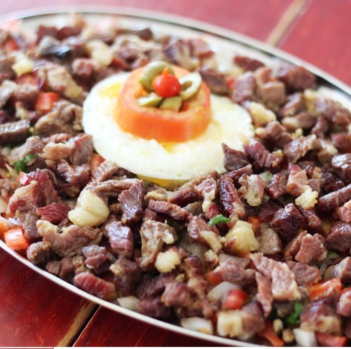

Açaí
O açaí é uma fruta rica em fibras. Isso significa que dá aquela sensação de saciedade que impede que a pessoa coma mais do que necessita. Pois é, é por isso que muita gente substitui a refeição por um grande copo de açaí. Mas as fibras possuem mais uma vantagem: ajudam a regular o intestino, evitando tanto prisão de ventre quanto a diarreia. Com isso, os nutrientes são melhor absorvidos pelo corpo, garantindo que ele continue funcionando bem.
Muita gente não sabe, mas o açaí também é um ótimo aliado do coração. Isso porque ele possui boas quantidades de antocianina, nutriente responsável pela sua coloração roxa. Essa substância evita a degeneração celular, o que por si só já impede o aparecimento de problemas cardiovasculares. Mas além disso, o açaí é praticamente uma concentração de polifenóis, que por sua vez aumentam o fluxo sanguíneo do coração, permitindo que ele continue saudável e resistente

Vatapá
O vatapá é de origem africana, e chegou ao Brasil por intermédio dos africanos iorubás com o nome de ehba-tápa.
É um prato típico das cozinhas nordestina e nortista e é marca da influência da população negra nessas regiões. É muito divulgado pela Bahia onde em seu feitio acrescentam o azeite de dendê, e serve como um acompanhamento do acarajé. É igualmente popular no Amazonas, no Amapá, no Pará e em Rondônia, onde a receita sofre variações como a ausência de amendoim (ingrediente original das Américas) e outros ingredientes comuns na versão tradicional. O vatapá é influência da culinária africana trazida pelos africanos escravizados nos navios negreiros, a partir do século XVI. Com os ingredientes encontrados nesta nova terra e a necessidade de suplementar sua dieta alimentar, desenvolveram outros pratos, que passaram a ser típicos da culinária brasileira. É exemplo disso o angu, entre outros.

Farinha de mandioca
Elas estão aos montes nas feiras do Pará. No Ver-o-Peso, em Belém, tem box com mais de 10 tipos diferentes de farinha de mandioca. Lavada ou seca, mais branquinha ou bem amarelinha. Praticamente há um tipo de farinha para cada gosto do cliente.
E a tentação do paraense pela farinha é evidente. Por onde se passa nas feiras, e tem farinha para vender, clientes pegam um punhadinho da farinha e jogam na boca, gesto típico de paraense. E não também não há hora para comê-la, como é o caso do Reginaldo, que às 10h da manhã está fazendo um lanchinho com a farinha como acompanhamento.
A farinha também tem papel de destaque na culinária amazônica. Nos restaurantes, os pratos regionais ganham um toque requintado do Chef Carlos Ruffeil, como o filhote empanado na farinha de carimã. E quem pede o prato, não se arrepende.

Farinha de Tapioca
Muito consumida no Pará, região Norte do Brasil, a farinha de tapioca flocada (ou granulada) é diferente da massa pronta para tapioca, mais comum e facilmente encontrada em mercados pelo país.
A massa pronta leva goma e, normalmente, é hidratada e peneirada, ideal para ser preparada no formato de disco e recheada. Já a flocada é peneirada em um tacho aquecido, onde deve ser mexida até “estourar”, semelhante a uma pipoca, ficando com uma textura de flocos de isopor.
Esse ingrediente faz parte da cultura alimentar local, muito consumido na região junto com açaí, vitaminas e usada para fazer bolos, pudim, dadinhos de tapioca e empanados.

Charque
O charque (em quíchua: charki ou em araucano charqui, carne salgada) é uma carne salgada e seca ao sol com o objetivo de mantê-la própria ao consumo por mais tempo. Tem uma salga e exposição solar maiores que outras carnes dessecadas, sendo empilhado como mantas em lugares secos para desidratação. Não é rara a utilização dos termos charque, carne-seca e carne de sol como sinônimos, no entanto a diferença reside basicamente no modo de preparação.
O charque de hoje é feito com carne bovina, principalmente de vitela ou carne jovem, de cortes menos nobres, como acém ou músculo. Sua principal utilização é na elaboração do pratos típicos regionais como arroz carreteiro, roupa velha (charque desfiado) e charque farroupilha no Sul, e escondidinho de charque (com purê de macaxeira) e arrumadinho (com feijão verde, vinagrete e farinha) no Nordeste.